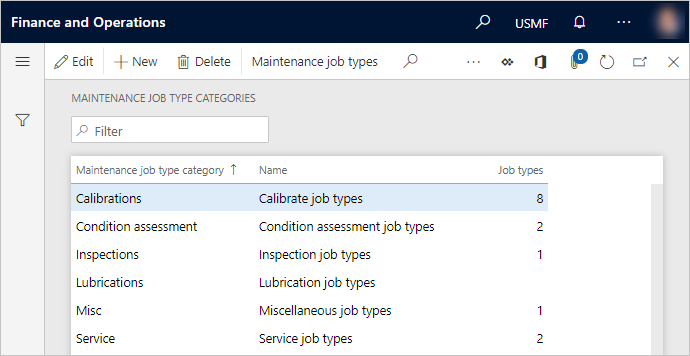
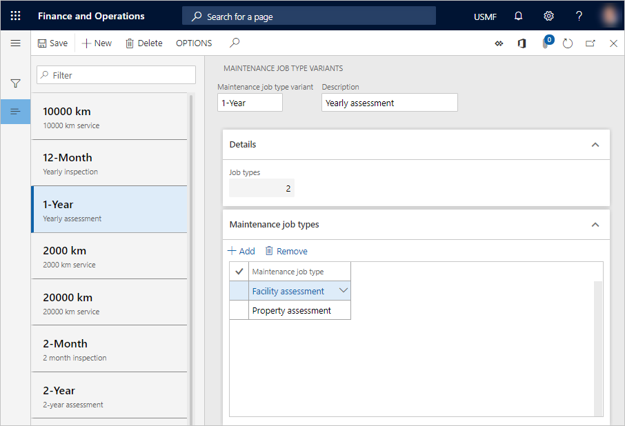
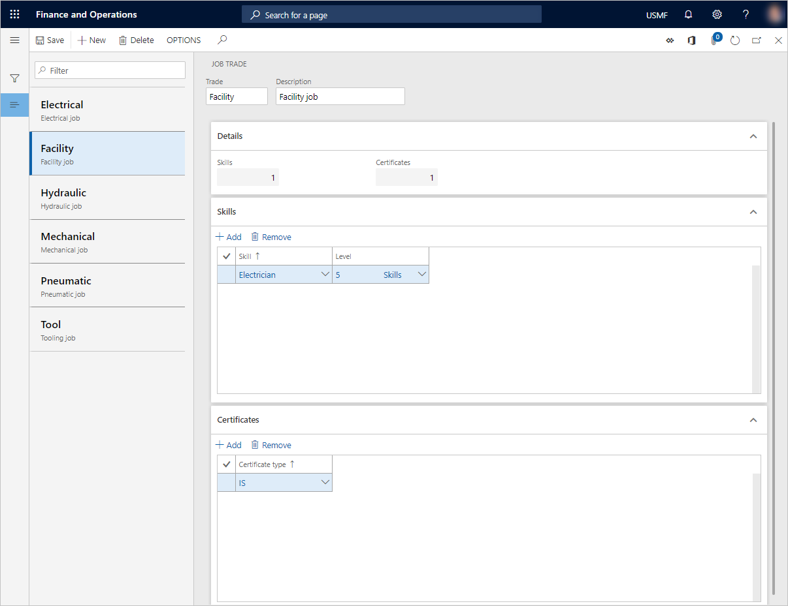
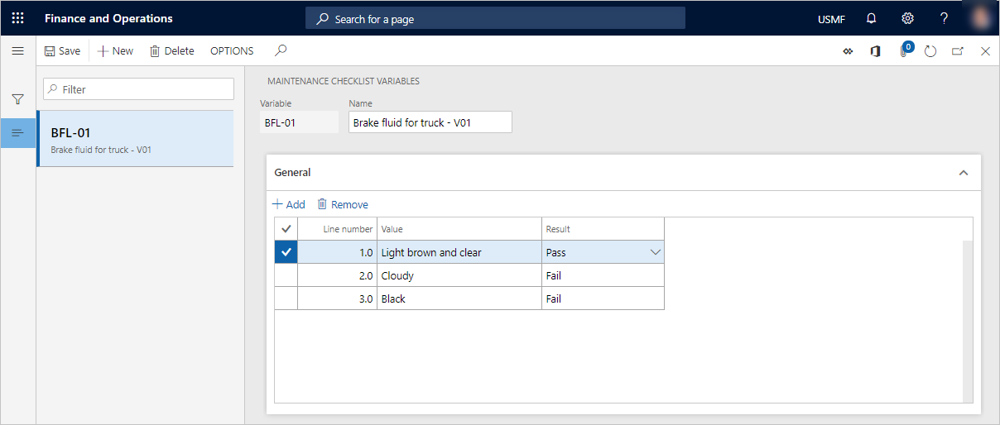
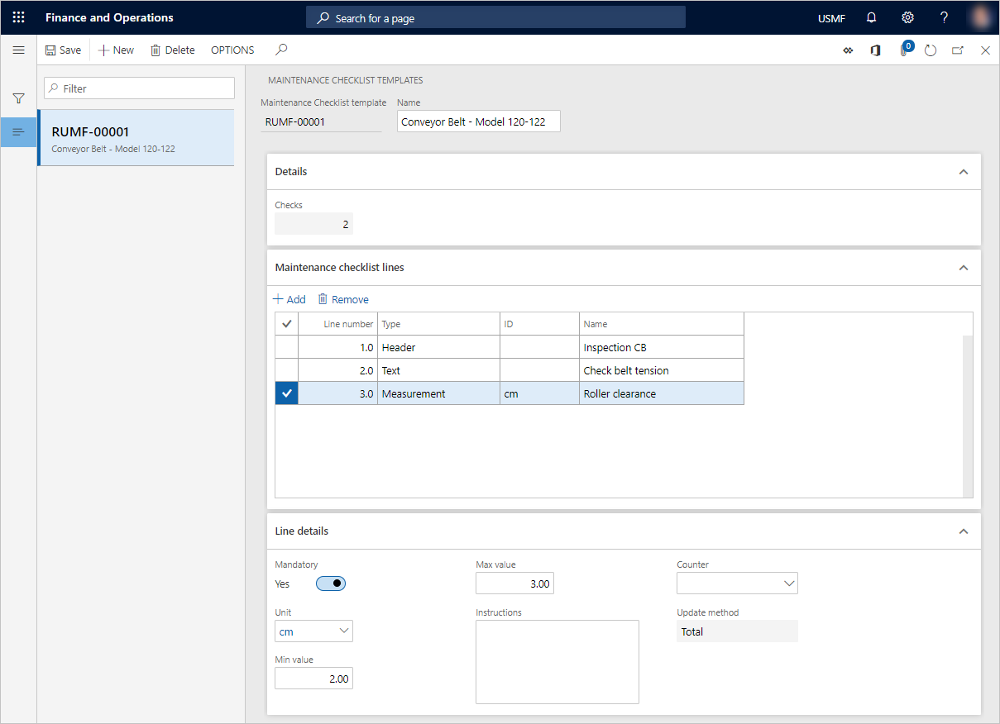
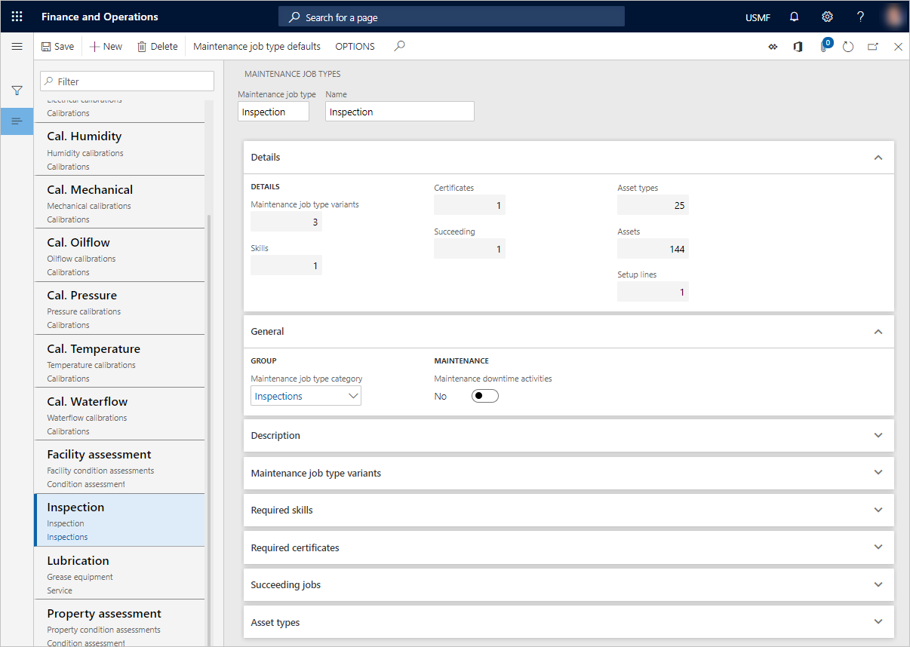
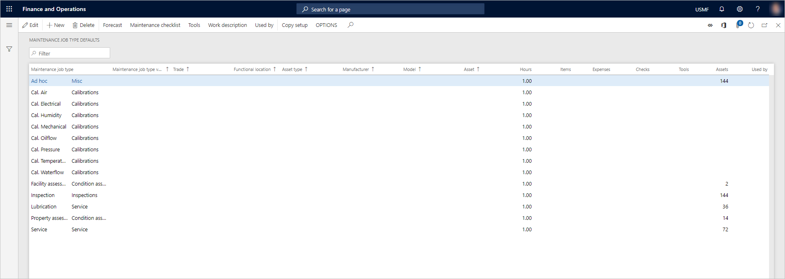
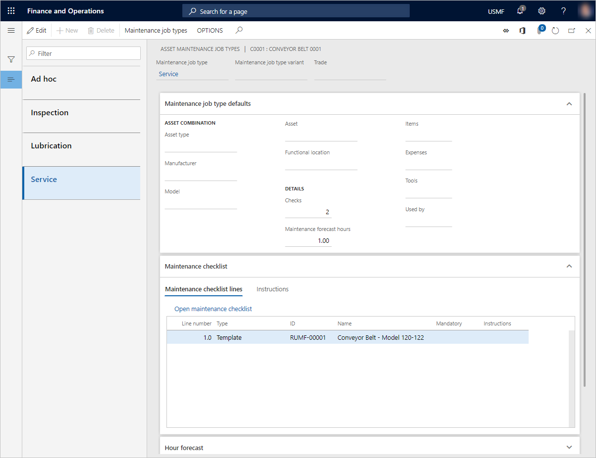

Kategorien von Wartungsaufträgen und Arten von Wartungsaufträgen, Variationen von Wartungsaufträgen, Handel von Wartungsaufträgen und Wartungsprüflisten
Important
Dynamics 365 for Finance and Operations hat sich zu speziell entwickelten Anwendungen entwickelt, mit denen Sie bestimmte Geschäftsfunktionen verwalten können. Weitere Informationen zu diesen Änderungen finden Sie im Dynamics 365-Lizenzierungshandbuch.
Jeder Anlage ist ein Anlagentyp zugeordnet. Anlagentypen definieren die Wartungsauftragsarten (und damit die Wartungsaufträge), die auf Anlagen durchgeführt werden können. Wenn Sie einen Arbeitsauftrag anlegen, müssen Sie einen Wartungsauftragstyp auswählen. Sie können nur die Wartungsauftragsarten auswählen, die sich auf das Einrichten der Anlagenart beziehen, die für die Anlage verwendet wird.
Eine grafische Übersicht über Anlagen und Instandhaltungsjobtypen und deren Verbindung zu Arbeitsaufträgen finden Sie unter Technische Standorte und Anlagen.
Varianten von Wartungsauftragsarten können auf einem Wartungsauftragstyp eingerichtet werden. Varianten von Wartungsaufträgen definieren Abweichungen eines Auftragstyps, wie z.B. Größen (klein, mittel oder groß), Zeiträume (wöchentlich, halbmonatlich, ein Monat oder drei Monate) und Konfigurationen (niedriger Standard, flexibel oder leistungsstark).
Wartungsauftragsbranchen bieten Informationen über professionelle Branchen, wie z.B. mechanische, elektrische und hydraulische. Für eine Wartungsauftragsbranche können Kompetenzanforderungen festgelegt werden. Die gesamten Wartungsauftragsbranchen können in Bezug auf alle Wartungsauftragsarten verwendet werden. Die Auswahl einer Wartungsauftragstypvariante und/oder der Wartungsauftragsbranche auf einem Arbeitsauftrag ist optional.
Für jede Wartungsauftragsart können Varianten der Wartungsauftragsarteinstellungen erstellt werden. Wenn Sie beispielsweise einen Wartungsauftragstyp mit dem Namen Dienstleistung haben, können Sie die folgenden Varianten für diesen Wartungsauftragstyp anlegen: LKW 30.000 km, Kraftfahrzeuge 30.000 km und Lieferwagen 30.000 km.
Kategorien von Wartungsauftragsarten werden verwendet, um eine Gruppe von Wartungsauftragsarten zur Übersicht zu sammeln. Beispiele für Wartungsauftragstypkategorien möglicherweise über Kalibrierung, Prüfung, Überholung und Instrumentation.
Wartungsprüflistenvorlagen und Wartungsprüflistenvariablen werden verwendet, um Wartungsprüflisten einzurichten. Wartungschecklisten werden für Wartungsauftragsarten erstellt und für Arbeitsaufträge verwendet.
Sie richten zunächst die erforderlichen Kategorien von Wartungsauftragstypen, Wartungsauftragstypvarianten und Wartungsauftragsbranchen ein. Anschließend legen Sie Wartungsauftragsarten an. Schließlich erstellen Sie auf der Seite Wartungsauftragstyp-Standardwerte alle Abweichungen für Wartungsauftragtypen, die für Ihre Ausrüstung erforderlich sind. Auf dieser Seite können Sie auch Prognosen, Wartungschecklisten und Werkzeuge für eine Kombination von Wartungsauftragstypen einrichten.
Note
Ein Wartungsauftragstyp kann sich nur auf eine Kategorie von Wartungsauftragstypen beziehen.
Erstellen einer Kategorie für Wartungsauftragstypen
Wählen Sie Anlagenverwaltung > Einstellungen > Einzelvorgänge > Kategorien von Wartungsauftragstypen aus.
Wählen Sie Neu aus.
Geben Sie im Feld Kategorie von Wartungsauftragstypen eine Kennung für den Wartungsauftragstyp ein.
Geben Sie im Feld Name einen Namen ein.
Nachdem Sie die Kategorien von Wartungsauftragstypen mit den Wartungsauftragstypen verknüpft haben, zeigt das Feld Auftragstypen die Anzahl der Wartungsauftragstypen an, die mit dieser Kategorie von Wartungsaufträgen verknüpft sind.

Erstellen einer Variante für Wartungsauftragstypen
Wählen Sie Anlagenverwaltung > Einstellungen > Einzelvorgänge > Varianten von Wartungsauftragstypen aus.
Wählen Sie Neu aus.
Geben Sie im Feld Varianten von Wartungsauftragstypen eine Kennung für die Wartungsauftragstypvariante ein.
Geben Sie im Feld Beschreibung eine Beschreibung ein.
Wählen Sie im Wartungsauftragstypen-Inforegister Hinzufügen aus, um einen Wartungsauftragstyp hinzuzufügen.
Wählen Sie im Feld Wartungsauftragstyp den Wartungsauftragstyp aus.
Wiederholen Sie die Schritte 5 bis 6, um weitere Wartungsauftragstypen der Variante der Wartungsauftragstypen hinzuzufügen.
Auf dem Inforegister Details wird im Feld Einzelvorgangstypen die Anzahl von Wartungsauftragstypen angezeigt, die mit dieser Variante der Wartungsauftragstypen hinzugefügt wurden.

Erstellen einer Wartungsauftragsbranche
Wählen Sie Anlagenverwaltung > Einstellungen > Einzelvorgänge > Wartungsauftragsbranche aus.
Wählen Sie Neu aus.
Geben Sie im Feld Branche eine Kennung für die Wartungsauftragsbranche ein.
Geben Sie im Feld Beschreibung eine Beschreibung ein.
Aktivieren Sie auf dem Inforegister Qualifikationen Hinzufügen, um eine neue Qualifikation hinzuzufügen, die der Wartungsauftragsbranche zugeordnet werden soll.
Wählen Sie im Feld Qualifikation die Qualifikation aus.
Wählen Sie im Feld Ebene die Qualifikationsebene aus.
Wiederholen Sie die Schritte 5 bis 7, um weitere Qualifikationen zur Wartungsauftragsbranche hinzuzufügen.
Auf dem Inforegister Details wird im Feld Qualifikationen die Anzahl von Qualifikationen angezeigt, die dieser Wartungsauftragsbranche hinzugefügt wurden.
Wählen Sie auf dem Inforegister Zertifikate Hinzufügen aus, um ein Zertifikat zur Wartungsauftragsbranche hinzuzufügen.
Wählen Sie im Feld Zertifikatstyp das Zertifikat aus.
Wiederholen Sie die Schritte 9 bis 10, um weitere Zertifikate zur Wartungsauftragsbranche hinzuzufügen.
Auf dem Inforegister Details wird im Feld Zertifikate die Anzahl von Zertifikaten angezeigt, die dieser Wartungsauftragsbranche hinzugefügt wurden.

Erstellen einer Wartungsprüflistenvariablen
Wenn Sie Wartungsprüflistenpositionen im standard Wartungsauftragstyp erstellen, müssen Sie einen Wartungsprüflistentyp auswählen. Variabel ist ein Wartungsprüflistentyp. Er wird verwendet, um ein mögliches Ergebnis in einem Bereich auf einer Wartungsprüflistenzeile zu definieren, die sich auf eine Arbeitsauftragzeile bezieht. Mit einer Variablen können Sie eine Reihe von vordefinierten Ergebnissen erstellen, ohne eine genaue Messung durchführen zu müssen.
Beispiel 1: Sie können den Ölstand messen, indem Sie drei Werte definieren: Stand zu hoch, Stand zu niedrig und Stand innerhalb des Bereichs. Für jeden Wert legen Sie fest, ob das Ergebnis des Wertes Erfolgreich Fehlgeschlagen Kein ist.
Beispiel 2: Sie führen eine Sichtprüfung an einem Ausrüstungsgegenstand/Arbeitsgerät durch, um den Verschleiß zu beurteilen.
Wählen Sie Anlagenverwaltung > Einstellungen > Wartungsprüflisten > Variablen der Wartungsprüfliste.
Wählen Sie Neu aus.
Geben Sie im Feld Variable eine Kennung für die Wartungsprüflistenvariable ein.
Geben Sie im Feld Name einen Namen ein.
Wählen Sie auf dem Inforegister Allgemeines Hinzufügen aus, um eine Position für eine Variable hinzuzufügen.
Eine fortlaufende Positionsnummer wird automatisch in das Feld Positionsnummer eingetragen. Nachdem Sie alle Positionen hinzugefügt haben, können Sie die Zeilennummern nach Bedarf ändern. Wenn Sie die Position auswählen und dann die Taste NACH-UNTEN drücken, wird die nächste Nummer des Nummernkreises automatisch in der nächsten Zeile eingegeben.
Geben Sie im Feld Wert eine Wertbeschreibung ein.
Wählen Sie im Feld Ergebnis ein Ergebnis für die Position aus.

Erstellen einer Wartungsprüflistenvorlage
Wartungsprüflistenvorlagen können als allgemeiner Satz von Aufgaben verwendet werden, die ein Mitarbeiter ausführen muss, um einen Arbeitsauftrag korrekt auszuführen. Die Vorlagen werden aus den Positionen der Wartungsprüfliste auf den Standard für Wartungsauftragstypen referenziert. Vorlagen können über mehrere Standardpositionen für den Wartungsauftragstyp referenziert werden. Daher können Sie einen Satz allgemeiner Wartungsprüflistenaufgaben problemlos wiederverwenden. Beispiele für Wartungsprüflistenvorlagen sind allgemeine Sicherheitshinweise und eine Liste von Gegenständen und Bedingungen, die an einer bestimmten Pumpe oder ähnlichen Modellen eines Förderbandes überprüft werden müssen.
Wählen Sie Anlagenverwaltung > Einstellungen > Wartungsprüflisten > Wartungsprüflistenvorlagen.
Wählen Sie Neu aus.
Eine Vorlagenkennung wird automatisch in das Feld Wartungsprüflistenvorlage eingegeben.
Geben Sie im Feld Name einen Namen für die neue Wartungsprüflistenvorlage ein.
Wählen Sie auf dem Inforegister Wartungsprüflistenpositionen Hinzufügen, um die Vorlagenposition hinzuzufügen.
Eine fortlaufende Positionsnummer wird automatisch in das Feld Positionsnummer eingetragen. Nachdem Sie alle Positionen hinzugefügt haben, können Sie die Zeilennummern nach Bedarf ändern. Wenn Sie die Position auswählen und dann die Taste NACH-UNTEN drücken, wird die nächste Nummer des Nummernkreises automatisch in der nächsten Zeile eingegeben.
Im Feld Typ wählen Sie einen Typ für die Wartungsprüflistenposition aus. Für jeden Wartungsprüflistentyp zeigt das Inforegister Positionsdetails verknüpfte Felder an. Folgende Werte sind verfügbar:
Text – Die Position enthält Text der beschreibt, was zu tun ist. Verwenden Sie diesen Wartungsprüflistentyp, wenn Sie möchten, dass ein Mitarbeiter etwas überprüft oder inspiziert, aber kein bestimmtes (messbares) Ergebnis erwartet. Nachdem Sie diesen Typ ausgewählt haben, geben Sie einen Namen oder eine Überschrift im Feld Name ein. Geben Sie im Feld Anweisungen eine Beschreibung dessen ein, was getan werden muss. Wenn der Schritt für die Wartungsprüfliste obligatorisch ist, stellen Sie die Option Obligatorisch auf Ja.
Kopfzeile – Die Position wird als Überschrift verwendet, um die Positionen der Wartungsprüfliste zu gruppieren, die darunter erscheinen. Dieser Typ ist hilfreich, wenn Sie mehrere Wartungsprüflistenpositionen haben, die in bestimmte Bereiche unterteilt werden können. Kopfzeilen bieten einen Überblick für den Mitarbeiter, der eine Wartungsprüfliste ausfüllt, die viele Wartungschecklistenpositionen enthält. Nachdem Sie diesen Typ ausgewählt haben, geben Sie einen aussagekräftigen Namen im Feld Name ein.
Vorlage – Die Position wird verwendet, um einen Verweis auf eine bestehende Vorlage zu erstellen. Nachdem Sie diesen Typ ausgewählt haben, geben Sie einen Namen für die Vorlage im Feld Name ein. Wählen Sie im Feld Vorlage die Vorlage aus.
Variabel – Die Position verwendet, um ein mögliches Ergebnis in einem Bereich zu definieren. Informationen zum Einrichten von Variablen für die Wartungsprüfliste finden Sie im Abschnitt Erstellen einer Wartungsprüflistenvariablen. Nachdem Sie diesen Typ ausgewählt haben, geben Sie einen aussagekräftigen Namen für die Vorlage im Feld Name ein. Wählen Sie im Feld Variabel die Variabel aus. Geben Sie im Feld Anweisungen eine Beschreibung dessen ein, was getan werden muss. Wenn der Schritt für die Wartungsprüfliste obligatorisch ist, stellen Sie die Option Obligatorisch auf Ja.
Messung – Die Position wird verwendet, um eine bestimmte Messung zu erfassen. Sie können die Messungen einrichten, die einem vordefinierten Zähler zugeordnet werden soll. Nachdem Sie diesen Typ ausgewählt haben, geben Sie einen Namen für die Vorlage im Feld Name ein. Wenn dieser Schritt für die Wartungsprüfliste obligatorisch ist, stellen Sie die Option Obligatorisch auf Ja. Wenn Sie die Messungsposition als Zählererfassung verwenden möchten, wählen Sie den Zähler im Feld Zähler aus. Das zugehörige Feld Einheit wird dann automatisch aktualisiert. Wenn Sie einen Zähler ausgewählt haben, wählen Sie die Aktualisierungsmethode im Feld Wert. Geben Sie in den Feldern Mindestwert und Maximalwert den zulässigen Wertebereich ein. Geben Sie im Feld Anweisungen eine Beschreibung dessen ein, was getan werden muss.
Note
Jede Position des Typs Messung, der keinen Zähleraufbau hat, wird als unabhängige Messwerterfassung behandelt, für die es im Asset Management keine automatische Nachverfolgung gibt. Wenn der ausgewählte Zählertyp nicht auf der Anlage vorhanden ist, die sich auf den Arbeitsauftrag bezieht, wird die Aufgabe der Wartungsprüfliste als unabhängige Messung behandelt. Der Zählerwert kann mehrmals geändert werden. Es wird erst gebucht, wenn der Arbeitsauftrags-Lebenszyklusstatus in einen Zustand geändert wird, in dem die Option Prozesswartungsprüfliste auf Ja festgelegt ist.
Auf dem Inforegister Details wird im Feld Prüfungen die Gesamtanzahl von Prüflistenpositionen in der Vorlage angezeigt. Diese Nummer enthält die geschachtelten Positionen jeder vorhandenen Vorlage, auf die Sie in Ihrer Vorlage verwiesen haben.

Erstellen eines Wartungsauftragstyps
Wählen Sie Anlagenverwaltung > Einstellungen > Einzelvorgänge > Wartungsauftragstypen aus.
Wählen Sie Neu aus.
Geben Sie im Feld Wartungsauftragstyp eine Kennung für den Wartungsauftragstyp ein.
Geben Sie im Feld Name einen Namen ein.
Das Inforegister Details zeigt eine Übersicht über die Anzahl der Wartungsauftragtypvarianten, Qualifikationen, Zertifikate, Folgeaufträge und die Anlagentypen an, die auf diesem Wartungsauftragstyp erstellt wurden. Das Feld Einstellungspositionen zeigt die Anzahl der Standardpositionen des Wartungsauftragtyps an, die auf diesem Wartungsauftragstyp eingerichtet wurden. Das Feld Anlagen zeigt die Anzahl aktiver Anlagen an, die aktuell den betreffenden Wartungsauftragstyp verwenden.
Wählen Sie auf der Registerkarte Allgemein im Feld Kategorie der Wartungsauftragstypen eine Kategorie der Wartungsauftragstypen aus.
Setzen Sie die Option Wartungsausfallaktivitäten auf Ja wenn der Wartungsauftragtyp einen Wartungsstopp des Geräts erfordert, bevor der Auftrag ausgeführt werden kann.
Geben Sie auf dem Inforegister Beschreibung eine Beschreibung des Wartungsauftragstyps ein.
Im Feld Varianten von Wartungsauftragstypen können Sie Varianten zum Wartungsauftragstyp hinzufügen.
In den Inforegistern Erforderliche Qualifikationen und Erforderliche Zertifikate können Sie Qualifikationen und Zertifikatsanforderungen zum Wartungsauftragstyp hinzufügen.
Wenn als nächstes ein bestimmter Wartungsauftragstyp ausgeführt werden muss, fügen Sie diesen zum Feld Nachfolgender Einzelvorgang hinzu. Sie können auch eine Wartungsauftragstypvariante und eineWartungsauftragsbranche einrichten, die sich auf den Wartungsauftragstyp beziehen. Wenn der nachfolgende Einzelvorgang eine bestimmte Anzahl von Tagen vor oder nach dem Start des Einzelvorgangs starten soll, der diesen Wartungsauftragstyp verwendet, geben Sie die Anzahl der Tage in das Feld Verzögerung in Tagen ein. Positive Zahlen stehen für Tage nach Beginn des jeweiligen Einzelvorgangs, negative für Tage vor dem geplanten Beginn des betreffenden Einzelvorgangs. Wenn Sie beispielsweise 5 eingeben, startet der nachfolgende Vorgang fünf Tage nach dem Start des Vorgangs, der sich auf den Wartungsauftragstyp bezieht. Wenn Sie beispielsweise -3 eingeben, startet der nachfolgende Vorgang drei Tage vor dem terminierten Start des Vorgangs, der sich auf den Wartungsauftragstyp bezieht.
Note
Wenn Sie mehr als eine Wartungsauftragstypposition hinzufügen, gibt die Reihenfolge der Positionen die Reihenfolge an, in der sie ausgeführt werden sollen. Die Sequenz beginnt ganz oben in der Liste.
Auf dem Inforegister Anlagentypen können Sie Anlagentypen zum Wartungsauftragstyp hinzufügen.

Erstellen von Standardpositionen für Wartungsauftragstypen und zugehörige Prognosen, Wartungsprüflisten, Werkzeuge, Beschreibungen und Anhänge
Wählen Sie Anlagenverwaltung > Einstellungen > Einzelvorgänge > Standards für Wartungsauftragstypen aus.
- oder -
Wählen Sie Asset-Management > Einstellungen > Einzelvorgänge > Wartungsauftragstypen aus, wählen Sie einen Wartungsauftragstyp, und wählen Sie dann Standards für Wartungsauftragstypen.
Wählen Sie Neu aus.
Wählen Sie in den Feldern Funktionaler Standort, Anlagentyp, Hersteller, Modell und Anlage geeignete Werte aus, je nachdem, wie spezifisch der Standard für den Wartungsauftragstyp sein soll.
Wählen Sie im Feld Wartungsauftragstyp einen Wartungsauftragstyp aus, wenn er nicht automatisch ausgewählt wurde.
Wählen Sie in den Feldern Wartungsauftragstypvariante und Branche eine Wartungsauftragstypvariante und eine Wartungsauftragsbranche nach Ihren Wünschen aus.
Wählen Sie Planung.
Auf der Seite Wartungsauftragstyp-Standardplanung können Sie Prognosen für Stunden, Artikel und Ausgaben vornehmen. Wählen Sie auf den entsprechenden Registerkarten Hinzufügen und treffen Sie Auswahlmöglichkeiten, um die erforderlichen Prognosen für den Wartungsauftragstyp zu erstellen.
Auf der Registerkarte Artikelprognosen können Sie Lagerungsdimensionen auswählen, die auf der Artikelposition angezeigt werden sollen. Wählen Sie Bestand > Dimensionen aus, wählen Sie die anzuzeigenden Dimensionen aus, legen Sie die Option Einstellungen speichern auf Ja fest, und wählen Sie dann OK aus.
Wählen Sie auf der Registerkarte Artikelprognosen die Option Artikelverwendungsort, um eine Übersicht darüber zu erhalten, wo der Artikel in der ausgewählten Position im Asset Management in Bezug auf Anlagen, Standard für Wartungsauftragstypen, Ersatzteile und Arbeitsaufträge verwendet wird.
Das Inforegister Wartungsprognose – Summen zeigt eine Übersicht über die Prognosesummen an. Diese Übersicht enthält die Gesamtanzahl von Stunden und Prognosepositionen, die erstellt wurden.
Note
Um das Prognosesetup aus einem anderen Wartungsauftragstyp zu kopieren, wählen Sie Planung kopieren und dann den Wartungsauftragstyp, aus dem die Einstellungen kopiert werden sollen, aus.
Wählen Sie Speichern aus, um die Änderungen zu speichern.
Schließen Sie die Seite Wartungsauftragstyp-Standardprognose, um zur Seite Wartungsauftragstyp-Standardwerte zurückzukehren.
Wählen Sie Wartungsprüfliste aus.
Auf der Seite Prüfliste für Wartungsauftragstyp-Standardwerte können Sie Wartungsprüflistenpositionen dem ausgewählten Wartungsauftragstypstandard hinzufügen. Wählen Sie auf dem Inforegister Wartungsprüflistenpositionen Neu, um eine Wartungsprüflistenposition hinzuzufügen.
Positionsnummern werden automatisch in das Feld Positionsnummer eingetragen, um die Reihenfolge der Wartungsprüflistenpositionen anzugeben. Sie können Positionsnummern editieren, wie Sie sie benötigen. Nachdem Sie die erste Wartungsprüflistenposition erstellt haben, wählen Sie die Position aus, und drücken Sie dann die Taste NACH-UNTEN um eine Position darunter hinzuzufügen. Alternativ können Sie eine Wartungsprüflistenposition und dann Neu auswählen. In diesem Fall wird eine neue Position über der ausgewählten Wartungsprüflistenposition hinzugefügt.
Wählen Sie im Feld Typ den Positionstyp aus, und fügen Sie anschließend Informationen hinzu, die dem Wartungsprüflistentyp zugeordnet ist. Eine Beschreibung der verfügbaren Typen und der zugehörigen Felder finden Sie im Abschnitt Erstellen einer Wartungsprüflistenvorlage-Abschnitt.
Note
Um das Wartungsprüflistensetup aus einem anderen Wartungsauftragstyp zu kopieren, wählen Sie Wartungsprüfliste kopieren und dann den Wartungsauftragstyp, aus dem die Einstellungen kopiert werden sollen, aus.
Sie können ganz einfach eine Vorlage aus einer bestehenden Wartungsprüfliste erstellen. Sie können die Vorlage dann für weitere Wartungsprüflisten wiederverwenden. Die neue Vorlage ist eine genaue Kopie der aktiven Wartungsprüfliste. Wählen Sie Vorlage erstellen aus und geben dann einen Namen für die Vorlage ein. Um die bestehende Wartungsprüfliste durch eine einzelne Zeile zu ersetzen, die auf die neue Vorlage verweist, setzen Sie die Option Ersetzen auf Ja. Sie können den Inhalt der Vorlage auf der Detailseite der Wartungsprüflistenvorlagen einsehen.
Wählen Sie Speichern aus, um die Änderungen zu speichern.
Kehren Sie zur Seite Standards für Wartungsauftragstypen zurück.
Wählen Sie Tools aus.
Auf der Seite Wartungsauftragstyp-Standardtools können Sie die Tools (Ressourcen) hinzufügen, die für den Wartungsauftragstyp verwendet werden sollen. Wählen Sie Neu und dann das Tool im Feld Ressource aus.
Note
Um das Toolsetup aus einem anderen Wartungsauftragstyp zu kopieren, wählen Sie Tools kopieren und dann den Wartungsauftragstyp, aus dem die Einstellungen kopiert werden sollen, aus.
Wählen Sie Speichern aus, um die Änderungen zu speichern.
Kehren Sie zur Seite Standards für Wartungsauftragstypen zurück.
Wählen Sie Arbeitsbeschreibung aus.
Wählen Sie auf der Seite Arbeitsbeschreibung Bearbeiten aus und fügen Sie anschließend nach Bedarf eine Beschreibung hinzu, die dem ausgewählten Standard für Wartungsauftragstypen zugeordnet ist.
Wählen Sie Speichern, um die Beschreibung zu speichern.
Wenn Sie hier eine Arbeitsbeschreibung hinzufügen, überschreibt sie jede Beschreibung, die für den Wartungsauftragstyp auf der Seite Wartungsauftragstypen eingerichtet ist. Wenn Sie hier keine Arbeitsbeschreibung hinzufügen, wird eine beliebige Beschreibung verwendet, die für den Wartungsauftragstyp eingerichtet ist. Beschreibungen werden automatisch in Arbeitsaufträge übertragen, die den Wartungsauftragstyp oder Standard für Wartungsauftragstypen verwenden.
Kehren Sie zur Seite Standards für Wartungsauftragstypen zurück.
Um die Anlagen in einer ausgewählten Standardposition für den Wartungsauftragstyp einzurichten, wählen Sie Dokumente anfügen aus. Anlagen, die auf einer Standardposition für den Wartungsauftragstyp eingerichtet sind, werden automatisch in Arbeitsauftragspositionen aufgenommen, die diese Standardposition für den Wartungsauftragstyp verwenden.
Wählen Sie Neu und dann einen Dokumenttyp aus.
Laden Sie das Dokument oder die Datei hoch.
Legen Sie die Felder auf der Seite Anlagen fest. Die Anlageeinrichtung verwendet die Standardfunktionalität der Dokumenteneinrichtung.
Wählen Sie Speichern, um die Anlagen zu speichern.
Note
Anlagen in einer Standardposition des Wartungsauftragstyps werden nur zusammen mit einem Arbeitsauftragsbericht gedruckt, wenn die Dokumenttypen der Anlagen auf der Registerkarte Dokumenttypen der Seite Anlagenverwaltungsparameter aktiviert sind (Anlagenverwaltung > Einstellungen > Anlagenverwaltungsparameter). Beispiele für Anlagen beinhalten Richtlinien, die das Abschließen eines bestimmten Auftrags oder einer vordefinierten Wartungsprüfliste erklären (wenn Sie nicht die Wartungsprüflistenfunktionalität der Standardpositionen für den Wartungsauftragstyp verwenden).
Auf der Seite Standards für Wartungsauftragstypen zeigt jede Position die Anzahl der geplanten Stunden sowie die Anzahl der Positionen, die für Artikel, Ausgaben, Wartungsprüflisten und Tools erstellt wurden. Das Feld Anlagen zeigt die Anzahl aktiver Anlagen an, die sich auf die Standardposition für den Wartungsauftragstyp beziehen.
Um einen Standard für Wartungsauftragstypen in einen anderen Standard für Wartungsauftragstypen zu kopieren, markieren Sie die Standardposition für den Wartungsauftragstyp, in die Sie eine andere Einstellung kopieren wollen, wählen Sie Setup kopieren und wählen Sie dann den Standard für Wartungsauftragstypen zum Kopieren.
Um eine Liste der Anlagen, Wartungspläne oder Wartungsdurchgängen anzuzeigen, die derzeit eine Standardposition für Wartungsauftragstypen verwenden, markieren Sie die Position und wählen Sie dann Verwendet von aus.

Wenn das System den verfügbaren Standard für den Wartungsauftragstyp auswählt, der auf einer Arbeitsauftragsposition verwendet werden soll, basiert die Auswahl auf der Anlage und der zugehörigen Anlagentypeinstellung. Asset Management durchläuft alle Standarddatensätze des Wartungsauftragstyps, die sich auf den Wartungsauftragstyp beziehen, der in Bezug zum Anlagetyp steht, um nach einer möglichen Übereinstimmung zu suchen. Die spezifischste Kombination wird immer zuerst geprüft. Mit anderen Worten, um die spezifischste Kombination zu finden, sucht Asset Management zunächst nach einer möglichen Übereinstimmung für das Feld Branche. Wenn keine Übereinstimmung gefunden wird, sucht es nach einer Übereinstimmung für das Feld Wartungsauftragstyp-Variante. Wenn keine Übereinstimmung gefunden wird, sucht es nach einer Übereinstimmung für das Feld Wartungsauftragstyp usw. . (Branche, dann Wartungsauftragstyp-Variante, dann Wartungsauftragstyp, dann Anlage, dann Modell, dann Hersteller und anschließend Anlagentyp). Wenn keine Kombination gefunden wird, wird der Standarddatensatz, in dem nur der Wartungsauftragstyp aktiviert ist, verwendet.
Eine Projektaktivitätskennung wird automatisch jeder Standardposition des Wartungsauftragstyp zugeordnet, die Sie erstellen. Die Projektaktivität wird im Prognoseprojekt angelegt, das im Wartungsprognoseprojekt auf der Registerkarte Anlagen der Seite Anlagenverwaltungsparameter aktiviert ist. Der Zweck der Projektaktivität ist die Verwaltung von Prognosen über Stunden, Artikel und Ausgaben in Bezug auf Arbeitsaufträge. Prognosen für Wartungsauftragstypen werden automatisch in die Arbeitsauftragsposition übernommen und vom Prognoseprojekt in das Arbeitsauftragsprojekt kopiert, das für die Arbeitsauftragsposition angelegt wird. Der Zweck der Projektaktivität ist die Verwaltung von Prognosen in Bezug auf Arbeitsaufträge.
Können Sie einen Batchauftrag einrichten, um die Standardreferenzen der Wartungsauftragstypen in regelmäßigen Abständen zu aktualisieren, oder Sie können den Auftrag manuell ausführen. Um einen Batchauftrag zu erstellen oder ein manuelles Update durchzuführen, wählen Sie Anlagenverwaltung > Periodisch > Vorbeugende Wartung > Standardreferenzen der Wartungsauftragstypen aktualisieren aus.
Überblick über Wartungsauftragstypen, die Anlagen zugeordnet sind
Nachdem Sie die erforderlichen Standardkombinationen für Wartungsauftragstypen erstellt haben, können Sie auf der Seite Alle Anlagen einen Überblick über den aktuellen Standard für Wartungsauftragstypen erhalten, der sich auf eine bestimmte Anlage bezieht. Der Überblick zeigt alle Standardkombinationen der Wartungsauftragstypen an, die für den Anlagentyp verwendet werden können, der für die Anlage ausgewählt wurde. Diese Kombinationen enthalten Kombinationen, die Variationen der Wartungsauftragstypvarianten und Wartungsauftragsbranchen enthalten.
Wählen Sie Anlagenverwaltung > Allgemeines > Anlagen > Alle Anlagen oder Aktive Anlagen.
Wählen Sie in der Liste die Anlage aus, um eine Übersicht über die Kombinationen der Wartungsanlagetypen zu erhalten.
Wählen Sie im Aktivitätsbereich, auf der Registerkarte Allgemein in der Gruppe Zugehörige Informationen die Option Wartungsauftragstypen.
Der linke Bereich der Seite Anlagewartungsauftragstypen zeigt eine Liste aller Wartungsauftragstyp-Kombinationen, die sich auf die ausgewählte Anlage beziehen.
Wählen Sie eine Kombination aus Wartungsauftragstypen aus, um das zugehörige Setup für Wartungsprüflisten, Prognosen und Tools anzuzeigen. Der Abschnitt Details auf dem Inforegister Wartungsauftragstyp-Standardwerte zeigt die Anzahl der zugehörigen Wartungsprüflisten, prognostizierten Stunden, Artikel usw., die sich auf die ausgewählte Kombination von Wartungsauftragstypen beziehen.
Um Details zum ausgewählten Wartungsauftragstyp anzuzeigen, markieren Sie Wartungsauftragstypen.

Automatische Aktualisierung von Wartungsauftragstyp-Prognosen
In der Anlageverwaltung können Sie Änderungen an den Prognosen der Wartungsauftragstypen für Stundenkosten, Artikelkosten und Ausgaben, die in anderen Modulen aktualisiert wurden, automatisch aktualisieren. Auf diese Weise können Sie sicherzustellen, dass Ihre Wartungsauftragstyp-Prognosen stets die neuesten Einstandspreise verwenden.
- Wählen Sie Anlagenverwaltung > Periodisch > Prognose > Wartungsauftragstyp-Prognose aktualisieren aus.
- Im Dialogfeld Wartungsauftragstyp-Prognose aktualisieren auf dem Inforegister Einzuschließende Datensätze, können Sie Auswahlen für bestimmte Wartungsauftragstypen nach Bedarf hinzufügen. Wählen Sie Filtern und Auswählen, um die Auswahl zu treffen.
- Im Inforegister Im Hintergrund ausführen können Sie die automatische Aktualisierung bei Bedarf als Batchauftrag einrichten.
- Klicken Sie auf OK, um die Aktualisierung der Prognose zu starten.